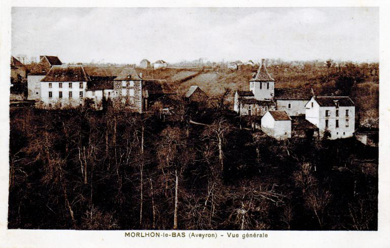

Bienvenue sur notre voyage à travers le temps !
Plongez avec nous dans les profondeurs d'une histoire familiale qui prend racine dès l'an 1000.
Ce site est une porte ouverte sur les récits époustouflants et les épopées remarquables de nos ancêtres,
des figures qui ont tissé le fil d'une lignée exceptionnelle à travers les siècles.
Notre famille, témoin et actrice de l'histoire, a traversé des périodes de prospérité et d'épreuves,
chaque génération laissant sa marque indélébile sur le cours du temps.
Des châteaux médiévaux aux révolutions, des explorations lointaines aux innovations qui ont façonné le monde,
notre arbre généalogique est un témoignage vivant de la résilience et de la richesse humaine.
À travers ce site, nous vous invitons à découvrir les histoires fascinantes de ceux qui nous ont précédés.
Des parchemins vieillis par le temps aux lettres échangées à travers les siècles, chaque document,
chaque artefact est une fenêtre ouverte sur leur époque.
Laissez-vous guider par les traces de notre passé et explorez avec nous les châteaux,
les batailles, les alliances et les héritages qui composent le grand livre de notre histoire familiale.
Ce voyage à travers le temps est une invitation à célébrer notre patrimoine, à comprendre d'où nous venons et à inspirer les générations futures.
Nous sommes honorés de partager avec vous cette aventure à travers les âges.
Bienvenue dans le récit millénaire de notre famille.